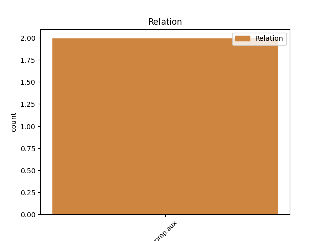

Distribution of features within this leaf

Agreement Rules sorted by frequency.
- When the dependent token is the parataxis(parataxis) of the head token, and the head token is AUX and the dependent token is VERB.
1 Inimesed _ _ _ _ 0 _ _ _
2 , _ _ _ _ 0 _ _ _
3 kes _ _ _ _ 0 _ _ _
4 võitlevad _ _ _ _ 0 _ _ _
5 iga _ _ _ _ 0 _ _ _
6 päev _ _ _ _ 0 _ _ _
7 paanika _ _ _ _ 0 _ _ _
8 hoogudega _ _ _ _ 0 _ _ _
9 , _ _ _ _ 0 _ _ _
10 on olema AUX V Mood=Ind|Number=Plur|Person=3|Tense=Pres|VerbForm=Fin|Voice=Act 0 _ _ _
11 tegelikult _ _ _ _ 0 _ _ _
12 väga _ _ _ _ 0 _ _ _
13 julged _ _ _ _ 0 _ _ _
14 - _ _ _ _ 0 _ _ _
15 igal _ _ _ _ 0 _ _ _
16 hommikul _ _ _ _ 0 _ _ _
17 nad _ _ _ _ 0 _ _ _
18 teavad teadma VERB V Mood=Ind|Number=Plur|Person=3|Tense=Pres|VerbForm=Fin|Voice=Act 10 parataxis _ SpaceAfter=No
19 , _ _ _ _ 0 _ _ _
20 et _ _ _ _ 0 _ _ _
21 tõenäoliselt _ _ _ _ 0 _ _ _
22 varsti _ _ _ _ 0 _ _ _
23 jälle _ _ _ _ 0 _ _ _
24 tuleb _ _ _ _ 0 _ _ _
25 hoog _ _ _ _ 0 _ _ _
26 , _ _ _ _ 0 _ _ _
27 mis _ _ _ _ 0 _ _ _
28 su _ _ _ _ 0 _ _ _
29 jalust _ _ _ _ 0 _ _ _
30 maha _ _ _ _ 0 _ _ _
31 niidab _ _ _ _ 0 _ _ _
32 . _ _ _ _ 0 _ _ _
1 Siin _ _ _ _ 0 _ _ _
2 on olema AUX V Mood=Ind|Number=Sing|Person=3|Tense=Pres|VerbForm=Fin|Voice=Act 0 _ _ _
3 minu _ _ _ _ 0 _ _ _
4 arvamus _ _ _ _ 0 _ _ _
5 asjade _ _ _ _ 0 _ _ _
6 kohta _ _ _ _ 0 _ _ _
7 , _ _ _ _ 0 _ _ _
8 mis _ _ _ _ 0 _ _ _
9 hoiavad _ _ _ _ 0 _ _ _
10 sind _ _ _ _ 0 _ _ _
11 tagasi _ _ _ _ 0 _ _ _
12 oma _ _ _ _ 0 _ _ _
13 elu _ _ _ _ 0 _ _ _
14 elamast _ _ _ _ 0 _ _ _
15 : _ _ _ _ 0 _ _ _
16 IGAÜKS _ _ _ _ 0 _ _ _
17 on olema AUX V Mood=Ind|Number=Sing|Person=3|Tense=Pres|VerbForm=Fin|Voice=Act 2 parataxis _ _
18 võimeline _ _ _ _ 0 _ _ _
19 saama _ _ _ _ 0 _ _ _
20 võitu _ _ _ _ 0 _ _ _
21 nendest _ _ _ _ 0 _ _ _
22 OMA _ _ _ _ 0 _ _ _
23 hirmudest _ _ _ _ 0 _ _ _
24 !!! _ _ _ _ 0 _ _ _
Disagree Examples:
1 Viimasel _ _ _ _ 0 _ _ _
2 ajal _ _ _ _ 0 _ _ _
3 on olema AUX V Mood=Ind|Number=Sing|Person=3|Tense=Pres|VerbForm=Fin|Voice=Act 0 _ _ _
4 toimunud _ _ _ _ 0 _ _ _
5 selginemine _ _ _ _ 0 _ _ _
6 : _ _ _ _ 0 _ _ _
7 tee tegema VERB V Mood=Imp|Number=Sing|Person=2|Tense=Pres|VerbForm=Fin|Voice=Act 3 parataxis _ SpaceAfter=No
8 , _ _ _ _ 0 _ _ _
9 mis _ _ _ _ 0 _ _ _
10 toitu _ _ _ _ 0 _ _ _
11 sa _ _ _ _ 0 _ _ _
12 teed _ _ _ _ 0 _ _ _
13 , _ _ _ _ 0 _ _ _
14 tee _ _ _ _ 0 _ _ _
15 seda _ _ _ _ 0 _ _ _
16 armastusega _ _ _ _ 0 _ _ _
17 . _ _ _ _ 0 _ _ _
1 Küll _ _ _ _ 0 _ _ _
2 ja _ _ _ _ 0 _ _ _
3 küll _ _ _ _ 0 _ _ _
4 olen olema AUX V Mood=Ind|Number=Sing|Person=1|Tense=Pres|VerbForm=Fin|Voice=Act 0 _ _ _
5 näinud _ _ _ _ 0 _ _ _
6 noori _ _ _ _ 0 _ _ _
7 lapsi _ _ _ _ 0 _ _ _
8 hobustega _ _ _ _ 0 _ _ _
9 tegemas _ _ _ _ 0 _ _ _
10 igast _ _ _ _ 0 _ _ _
11 imeasju _ _ _ _ 0 _ _ _
12 ja _ _ _ _ 0 _ _ _
13 kujutamas _ _ _ _ 0 _ _ _
14 ette _ _ _ _ 0 _ _ _
15 , _ _ _ _ 0 _ _ _
16 kui _ _ _ _ 0 _ _ _
17 head _ _ _ _ 0 _ _ _
18 nad _ _ _ _ 0 _ _ _
19 välja _ _ _ _ 0 _ _ _
20 näevad _ _ _ _ 0 _ _ _
21 Üks _ _ _ _ 0 _ _ _
22 asi _ _ _ _ 0 _ _ _
23 mida _ _ _ _ 0 _ _ _
24 ma _ _ _ _ 0 _ _ _
25 veel _ _ _ _ 0 _ _ _
26 ei _ _ _ _ 0 _ _ _
27 salli _ _ _ _ 0 _ _ _
28 on olema AUX V Mood=Ind|Number=Sing|Person=3|Tense=Pres|VerbForm=Fin|Voice=Act 4 parataxis _ _
29 ilma _ _ _ _ 0 _ _ _
30 kiivirta _ _ _ _ 0 _ _ _
31 sõitmine _ _ _ _ 0 _ _ _
32 ! _ _ _ _ 0 _ _ _
1 SRY _ _ _ _ 0 _ _ _
2 .. _ _ _ _ 0 _ _ _
3 aga _ _ _ _ 0 _ _ _
4 kõik _ _ _ _ 0 _ _ _
5 mu _ _ _ _ 0 _ _ _
6 sõbrannad _ _ _ _ 0 _ _ _
7 on olema AUX V Mood=Ind|Number=Plur|Person=3|Tense=Pres|VerbForm=Fin|Voice=Act 0 _ _ _
8 mu _ _ _ _ 0 _ _ _
9 vastu _ _ _ _ 0 _ _ _
10 ! _ _ _ _ 0 _ _ _
11 ma _ _ _ _ 0 _ _ _
12 msnnis _ _ _ _ 0 _ _ _
13 näiteks _ _ _ _ 0 _ _ _
14 küsin küsima VERB V Mood=Ind|Number=Sing|Person=1|Tense=Pres|VerbForm=Fin|Voice=Act 7 parataxis _ _
15 mis _ _ _ _ 0 _ _ _
16 teed _ _ _ _ 0 _ _ _
17 ? _ _ _ _ 0 _ _ _
1 2. _ _ _ _ 0 _ _ _
2 ärge ära AUX V Mood=Imp|Number=Plur|Person=2|Polarity=Neg|Tense=Pres|VerbForm=Fin|Voice=Act 0 _ _ _
3 ostke _ _ _ _ 0 _ _ _
4 kaupa _ _ _ _ 0 _ _ _
5 mida _ _ _ _ 0 _ _ _
6 toodaks _ _ _ _ 0 _ _ _
7 välismaalt _ _ _ _ 0 _ _ _
8 – _ _ _ _ 0 _ _ _
9 nende _ _ _ _ 0 _ _ _
10 kaupade _ _ _ _ 0 _ _ _
11 hinnad _ _ _ _ 0 _ _ _
12 jäävad jääma VERB V Mood=Ind|Number=Plur|Person=3|Tense=Pres|VerbForm=Fin|Voice=Act 2 parataxis _ _
13 samaks _ _ _ _ 0 _ _ _
14 või _ _ _ _ 0 _ _ _
15 odavnevad _ _ _ _ 0 _ _ _
16 3. _ _ _ _ 0 _ _ _
17 Raha _ _ _ _ 0 _ _ _
18 vahetus _ _ _ _ 0 _ _ _
19 praegu _ _ _ _ 0 _ _ _
20 või _ _ _ _ 0 _ _ _
21 pärast _ _ _ _ 0 _ _ _
22 euro _ _ _ _ 0 _ _ _
23 tulekut _ _ _ _ 0 _ _ _
24 pole _ _ _ _ 0 _ _ _
25 mõtet _ _ _ _ 0 _ _ _
26 või _ _ _ _ 0 _ _ _
27 ainult _ _ _ _ 0 _ _ _
28 väikeses _ _ _ _ 0 _ _ _
29 koguses _ _ _ _ 0 _ _ _
30 . _ _ _ _ 0 _ _ _
1 See _ _ _ _ 0 _ _ _
2 rootslanna _ _ _ _ 0 _ _ _
3 kes _ _ _ _ 0 _ _ _
4 seda _ _ _ _ 0 _ _ _
5 tutvustas _ _ _ _ 0 _ _ _
6 , _ _ _ _ 0 _ _ _
7 ütles _ _ _ _ 0 _ _ _
8 , _ _ _ _ 0 _ _ _
9 et _ _ _ _ 0 _ _ _
10 see _ _ _ _ 0 _ _ _
11 on olema AUX V Mood=Ind|Number=Sing|Person=3|Tense=Pres|VerbForm=Fin|Voice=Act 0 _ _ _
12 otseselt _ _ _ _ 0 _ _ _
13 piibli _ _ _ _ 0 _ _ _
14 lause _ _ _ _ 0 _ _ _
15 . _ _ _ _ 0 _ _ _
16 . _ _ _ _ 0 _ _ _
17 . _ _ _ _ 0 _ _ _
18 " _ _ _ _ 0 _ _ _
19 mullast _ _ _ _ 0 _ _ _
20 oled olema AUX V Mood=Ind|Number=Sing|Person=2|Tense=Pres|VerbForm=Fin|Voice=Act 11 parataxis _ _
21 sa _ _ _ _ 0 _ _ _
22 võetud _ _ _ _ 0 _ _ _
23 ja _ _ _ _ 0 _ _ _
24 mullaks _ _ _ _ 0 _ _ _
25 pead _ _ _ _ 0 _ _ _
26 sa _ _ _ _ 0 _ _ _
27 saama _ _ _ _ 0 _ _ _
28 " _ _ _ _ 0 _ _ _
29 . _ _ _ _ 0 _ _ _